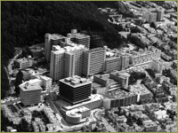
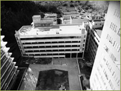
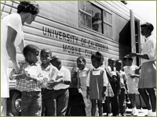
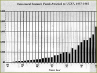
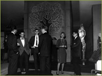
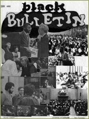

An Emerging Identity for the Health Sciences Campus
The period 1959-1989 witnessed a revolution in the health sciences and biomedical industries. At the beginning of the period there was no recombinant DNA technology, no biotechnology industry, no genetically engineered human growth hormone, interferon or hepatitis B vaccine, no “transgenic” mice to serve as disease models for everything from cancer to obesity, no proof for oncogenes, no genetically altered food, no gene therapy, no gene patents, no DNA fingerprinting. It was a revolutionary period for genetics research, and faculty at UCSF became leaders in multiple fields. Whether in research, teaching or community service, each school during this era of UCSF’s history made substantial innovations and contributions.

The San Francisco campus of the University of California was given full administrative independence to control its educational and financial matters in 1964. In 1970, the University of California, San Francisco Medical Center was renamed the University of California, San Francisco, by the Regents, in recognition of the diversity of disciplines on campus and for uniformity with the other UC campuses. The “Medical Center” continued to refer to the hospitals and clinics on Parnassus. The period saw a revolution in the health sciences and the creation of the biotechnology industry that has made the San Francisco Bay Area and UCSF so notable as an innovator in biomedical research. Beginning in the mid 1960s, reforms in graduate teaching and interschool collaboration—particularly integrating basic science training with clinical instruction—resulted in pioneering programs across all four Schools, the new Graduate Division, and the UCSF Medical Center, catapulting UCSF to the top ranks of US institutions for education and research in the health sciences.
UCSF, aerial view, 1975
At the beginning of the period 1959-1989, no pharmacists or pharmacy students worked in patient areas in hospitals. But in the mid 1960s the UCSF School of Pharmacy initiated a national trend by introducing its Clinical Pharmacy program, training pharmacists as patient-oriented drug therapists. A number of its faculty received the Ebert Prize, awarded by the American Pharmaceutical Association for best research paper in the profession, and the school’s programs in biopharmaceutics, pharmacokinetics and computer graphics were the most advanced in the world.

In 1972, when the new School of Nursing building was dedicated, it served the needs of some 600 students, 120 campus faculty and 80 adjunct faculty members.
The new School of Nursing building, completed in 1972, is located just off ‘Saunders Court’ where the original building that housed the Schools of Medicine, Pharmacy and Dentistry once stood.
Under the direction of Helen Nahm, who was appointed Dean of Nursing in 1958, the School was the first in the West to develop a doctoral program in nursing, and was unique by being the only School of Nursing in the country to establish a Department of Social and Behavioral Science, demonstrating its educational emphasis in both biological and social sciences.
In 1959, the American Dental Association’s Council on Dental Education reported that the UCSF School of Dentistry led the nation’s dental schools in the performance of graduates on the Dental National Board Examination, a requirement for state or regional licensure. In 1980, a year before its 100th anniversary, the School of Dentistry dedicated its own new building with outstanding new clinical facilities to replace obsolete clinics and equipment, which had jeopardized the school’s accreditation a few years previously.

Establishing a tradition of community outreach as represented in its establishment of the Mobile Dental Clinic in 1965, the school opened two outreach facilities in 1979 in underserved areas of San Francisco—the UCSF Community Dental Clinics at 100 Buchanan Street and at San Francisco General Hospital.
Mobile Dental Clinic 1966
The Medical Center continued to expand. By the 1980s, the hospitals cared for an average of 20,000 inpatients annually, while the clinics at the Ambulatory Care Center received an average of 190,000 patient visits each year, plus 25,000 emergency room visits. By 1990, UCSF’s four schools and the Graduate Division graduated an average of 244 advanced practice or doctorally prepared nurses, 146 physicians, 108 dentists, 110 pharmacists, and 44 doctoral researchers each year. The University employed over 11,000 people, making UCSF one of the largest employers in San Francisco. Always highly ranked in obtaining competitive research grants, it had by the 1980s regularly received more NIH dollars than any other health science campus in the country. At the end of the 1980s, UCSF’s annual operating budget was $555 million.

Throughout this period, the San Francisco campus began to find its own identity as a fully-fledged university. Developments in student and campus life services generated new special interest opportunities and events on campus. In September of 1958, Guy S. Millberry Union opened and became a hub of campus life on Parnassus Avenue for students, faculty, staff, alumni, neighbors and guests. The University of California had provided Student Union facilities at all campuses with undergraduate education programs, but that policy left out the San Francisco “Medical Center”. The original idea for a student center stretched back to the 1920s, when students from the School of Dentistry developed a student store and cafeteria. Guy Millberry, dean of dentistry from 1914-1939, both supported that enterprise and invested its proceeds. By the 1950s, that investment fund provided the financing for the complex of a gymnasium, swimming pool, fitness and recreation centers, conference rooms and cafeterias now named in his honor. (For more information click here.)
This graph shows the increase in extramural research funding at UCSF from the mid-1950s to the 1980s.

Throughout the years, numerous student organizations within the schools of dentistry, medicine, nursing, pharmacy, and the Graduate Division have been established, ranging from chapters of professional organizations to groups whose purpose is outreach via various health-related projects to the emergence of an interdisciplinary Medical Humanities program.Student Council in Millberry Union lobby, 1966.
Among the members of the UCSF community who were able to enjoy the benefits of Millberry Union’s facilities were the personnel of the General Services Department, the employees who provided all the services with regard to facility maintenance without which no medical center or university could exist.

The extension of these privileges to these employees was not automatic, however, and took the efforts of campus organizations including the Black Caucus, founded on May 4, 1968, exactly one month after the assassination of Dr. Martin Luther King, Jr. Recognizing that UCSF itself reflected social and economic relations as they exist in Bay Area communities, the Black Caucus was established as a forum to obtain a black consensus on racial matters that affect every person on campus. The Caucus, which was responsible for publishing the Black Bulletin, communicated directly with the Chancellor’s office and fought for changes in the employment conditions for minorities on campus, including immediate changes in the classification from janitors to custodian, resulting in a retroactive pay increase by 25%, and creating an Outstanding Performance Award for persons in the General Services Department. The Caucus was also instrumental in establishing new student recruitment goals for each of the schools at UCSF to increase minority admissions by 25% each year.
Photo montage from the June 1971 issue of the Black Bulletin.
Leadership
UCSF Chancellors: - John B. De C. M. Saunders (1956-1963)
- Willard Corwin Fleming (1966-1969)
- Philip Randolph Lee (1969-1972)
- Francis A. Sooy (1972-1982)
Deans (Dentistry):
-
Benjamin W. Pavone (1965-1980)
Deans (Graduate Division)
-
Howard A. Harper (1961-1980)
Deans (Medicine):
-
John B. De C. M. Saunders (1956-1963)
-
William O. Reinhardt (1963-1966)
-
Stuart C. Cullen (1966-1970)
-
Charles T. Carman (1970)
Deans (Nursing):
-
Amy A. Macowan (1957)
-
Mary T. Harms (1958)
-
Kathryn M. Smith (1958)
-
Helen E. Nahm(1958-1969)
-
Marjorie S. Dunlap (1969-1976)
-
Margaretta M. Styles (1977-1987)
-
Patricia C. Porthier (1988-1989)
Deans (Pharmacy):
-
Troy C. Daniels (1944-1966)
-
Jere E. Goyan (1967-1992)
>> Modernizing UC Medical Center
{% include footer.html %}